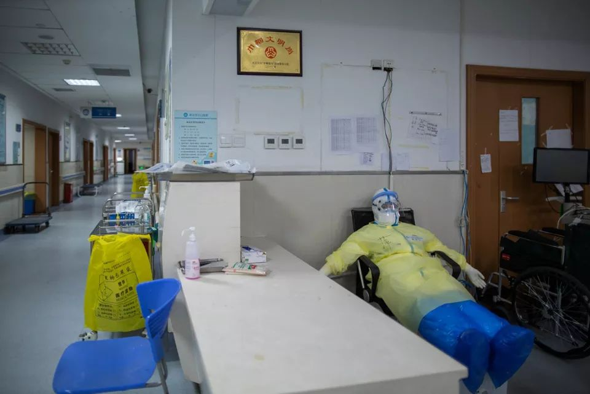
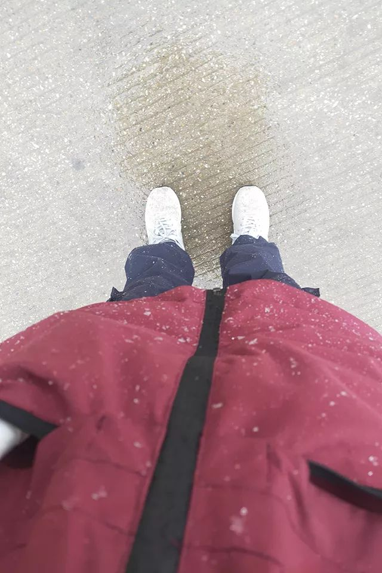

我守护在武汉金银潭的重症病房
原文链接 备份链接 陈德昌说，金银潭医院的重症病人情况比较严重。在他工作的病房里，29个病人有16个都上了呼吸机，同时面临物资短缺的难题。当他们作为上海医疗队进驻时，原有医护人员已连续工作近一个月了。这次出征，比想象中要艰苦。 57岁的陈 …


*************▲ *************2020年2月19日，在武汉市泰康同济医院，军队医护人员互相整理防护服。 （新华社/图）
全文共9028字，阅读大约需要20分钟。
此次派出的县级医院医护人员不在少数，远至宁夏西海固。安徽、江苏等省更将指标下沉至乡镇和社区卫生院。
SARS时，王洵还是医科生，母亲在发热门诊和隔离病房工作。王洵觉得呼吸科医生很伟大，当她决定选呼吸科时，母亲说，要是不幸再有“非典”，“就靠你们这一代了。”
“老鲁你一定活得下来！一定活得下来！只要你能吃得下，就能熬过去！”黄晓波拔高了音量，他是特意说给身边一同查房的医生护士们听的。
本文由南方周末独家授权腾讯平台，任何第三方未经授权不得转载
文 | 南方周末记者 李玉楼 高伊琛 发自广州
南方周末特派记者 杨楠 发自武汉
南方周末实习生 郑伊灵 何沛云
责任编辑 | 吴筱羽
同一张四号床，护士朱恋抢回过许多生，也送别过许多死。
ICU送来一个危重新冠肺炎患者前，朱恋备好了无创呼吸机和有创呼吸机插管。送到这里来的病人，需要高流量的呼吸治疗，才可能抢回一条命。
还备好了肌松药和镇静药，一旦无创呼吸不行，需要插管，得注射镇静、镇痛药，让受重创的肺部进入深度安静。这类药会影响病人的心率和血压，朱恋又拿出了维持血压的药。
转院来的是位老人。原医院医生跪在救护床上给他做心肺复苏，朱恋接上一个呼吸囊，做人工呼吸的加压培养。推入四号床，医生当即紧急插管——这是刚送来的抢救中能给到的最高呼吸支持了。
在武汉市金银潭医院ICU，床位号越靠前，病情越重——紧急送来的重症总是被推进第一间病房。朱恋和两位同事接力做心肺复苏，一人三分钟，交替进行。心电图依然呈现在30-40，一旦停止按压，立刻降至0。
按压了半小时，心率仍然无法自主恢复，医生宣告抢救失败。
死亡并不陌生，但朱恋很少面对这样直接的抢救无效，在中南大学湘雅医院重症ICU时，她和同事们往往能为病人争取一点治疗时间。直到2020年1月底，她来到金银潭医院南五楼ICU病房。朱恋是湖南首批医疗队五名护士之一。
四号床上更多的是活过来。
这里躺过一位武汉第四医院外科医生，他在门诊接诊时感染上新冠肺炎。同事将他推到四号床，朱恋给他戴上氧气面罩，加大氧流。15分钟后，血氧指数从40回升到80，虽然仍低于正常指标的90，但这几乎已经意味着抢救成功。
生与死、告别与重生每天在四号床上交替发生，在这座千万人口大城里交替发生，武汉自己也成了一个肺部遭受重创的患者，亟需被抢救。
以武汉为中心，病毒感染导致湖北全省受创，紧急向外呼救。
据国务院联防联控机制新闻发布会公布的数据，截至2020年2月17日，全国已派出3.2万余名医务人员支持湖北武汉，当中1.1万人是重症专业的医务人员，这个数据接近全国重症医务人员资源的10%。长江日报报道则显示，支援武汉的有208支医疗队、25972名医务人员。
这一医疗援助规模已远超2008年造成37万余人受伤的“5·12大地震”。
当下的湖北正在进行两场硬仗。一场是降低病死率的重症之役，战场在金银潭等重症定点医院；另一场是降低感染率的“应收尽收”，战场遍布武汉十余个方舱医院、社区医院、社区和广袤的湖北县乡。
一场史无前例的异地医疗支援悄然启动。为了抢救武汉和湖北，三万多名空投而来的医务人员，甚至动员至乡镇卫生院层级。
“保卫大武汉。”82年后，人们再次想起抗日战争时的这句呐喊。

2020年2月9日，武汉江汉方舱医院，云南援助湖北医疗队正在交班。（南方都市报记者 钟锐钧/图）
1
十七年前的毒我还记忆犹新
今天是昨天的翻版
而毒却不是昨天的毒
它的狡猾是人惯出来的
强传染也是人溺爱的果
——《武汉方舱医院一个护士的诗》
作者：弱水吟，甘肃一名心理科护士长
呼吸科医生王洵的硕博同学几乎在武汉聚齐了。
她本硕毕业于四川大学华西医学院，博士毕业于复旦大学医学院，SARS之后那年，2004年，王洵选择攻读呼吸科专业研究生。
2019年末，武汉传出不明原因肺炎的新闻，这位呼吸科医生一直密切关注新病毒相关的文献，同学群里的讨论也日渐频繁。
疫情明朗且披露的情况一日比一日严峻之后，“去武汉”成了呼吸科医生自然而然的选择——当然，也许并不存在选择。
2020年1月25日，大年初一，王洵作为江苏援鄂医疗队首批成员到达武汉。尽管对病毒本身的凶险已有充分认知，但武汉的严峻形势还是超出了王洵的预料。
王洵支援的是江夏区第一人民医院，一家三级乙等医院。抵达时，该院呼吸科医生极缺，原本只能承担一个病区的江苏医疗队只好分散至五个病区，培训其他科室的医护人员熟悉呼吸科的诊疗方法。
第一周，王洵每天要对60个病人挨个查房，从早上八点到中午一点。她的护士同事，每个班平均走16000步，换150瓶液，大约是日常工作量的两倍。
这不算什么艰巨的工作。更复杂的是，她要协同疾控专家和建筑工人对硬件防护进行升级，重新设计院内防疫流程。
升级防护是所有援鄂医疗队进驻后的首要任务，目的是为医护人员提供安全的工作环境。
王洵安排给消杀班护士的任务再琐碎不过：每四小时配置新鲜的消毒液，灌满二十几个病区门口的手消壶，确保垃圾袋装至2/3时打结，盯着清洁工每六个小时拖一次地，给病人发消毒小毛巾，叮嘱他们随手关门，盯着泡护目镜的消毒液水位线。
这些琐碎的任务在王洵看来十分重要。用她的话说：“毕竟，我们的任务不是救一个或者几个重病人，而是救一座城。”
人人都知道，针对此次新型冠状病毒需要高级别防护，但级别多高，即便是湖北当地和前来支援的大多数医护人员，都并不熟悉。
44岁的县城医生张华雄1.65米的个子，身材较胖，独自穿防护服时弯腰都很辛苦。他形容自己是个小老头了，又用了两个“笨拙”来形容自己穿上防护服。
“我对这种级别的防护是零基础，需要把穿脱流程一步一步背下来，防护服的塑胶味令呼吸不通畅，戴上护目镜也看不太清楚，就感觉很笨拙，下来都是一身汗。”
张华雄来自广东省梅州市丰顺县人民医院，那是一家二甲医院，当地没有确诊病例。他此前曾报名作为当地疫情暴发的预备人员，农历正月十五晚上，突然被通知支援湖北。
17年前SARS，张华雄已经是医生，但没有上前线，这次他坦言“也没想到会从县医院派医生”。直到抵达武汉第二天，他才知道自己被分配到武汉的东西湖区方舱医院——此前他还以为是去支援鄂州。
形势如此紧急，大多数外地援鄂医疗队队员的旅程都充满未知。许多人直到坐上飞机都不知道要去哪家医院，接管什么样的病区，甚至不知道要支援哪座城市，以至于郑州市中心医院轻信了网传对口方案，在出征横幅上写着“随州随州，我是郑州”——但最终去了武汉。
通过官方公布数据可知，80%的外地支援医务人员，都被派往了武汉——疫情中心。
尤其自2月3日启动方舱医院建设之后，武汉对医护人员的需求量骤增。截至2月19日，武汉已投入运营12个方舱医院，计划启用床位超过两万张。各区还在新改扩建大小型10座方舱医院，共计新增约11465个床位，届时方舱医院总床位数将接近19000张。
按照国家紧急医学救援队队长刘中民的测算，方舱医院每1000张床位至少需要200名医生和200名护士。如此估算，则两万张床位就需要近8000名医护人员。
湖北需要的医护人员缺口巨大，此次派出的医疗队员中，像张华雄这样的县级医院医护人员不在少数，豆瓣一个相关主题帖子下，跟帖显示，派出医护人员的县级医院遍布全国各地，远至宁夏西海固。
因而，安徽、江苏等省在派遣援鄂医疗队的护士时，已经将指标下沉至乡镇和社区卫生院。
陈娜（化名）就是一名来自合肥某镇卫生院的护士，方舱医院内每天十小时的工作强度，刷新了她的从业经历。
“第一天进舱就懵了，在自己的病区里转晕了两次。”陈娜告诉南方周末记者，医护人员和患者对这类医院都很陌生，加之穿着闷热的防护服，脑子会宕机。几天后，她慢慢摸索出穿着防护服呼吸的技巧：呼吸要短促，走路匀速缓慢，说话不带语气、避免深呼吸。
网络上热传的方舱广场舞就是从陈娜所在的病区兴起的。方舱病人的症状较轻，但普遍焦虑，“我刚进舱的时候也很焦虑，总担心自己被感染。”陈娜说，带着病人做操的确有助于缓解焦虑，早晚各一次，目前看效果不错。
随着一批又一批外地医务人员增援到位，武汉在慢慢好起来吗？
王洵的答案是，“我只能判断我的工作逐步走上正轨”。王洵每天仍然只有五个小时睡眠，而她的同事还在不断增赴湖北。至于齐聚武汉的同门，只能在群里“云聚会”，聚会的主题是：你今天什么病人，用了什么疗法，效果如何。
这让王洵想起上学时的日子。SARS那年她大三，母亲是江南大学校医，在发热门诊和隔离病房工作。还是医科生的王洵觉得呼吸科医生很伟大，因此决定选呼吸科。而母亲说，要是不幸再有“非典”（SARS），“就靠你们这一代了”。

2020年2月10日，武汉汉口医院，广东医疗队队员躺在办公椅上休息。（南方都市报记者 钟锐钧/图）
2
四川队本以为自己来了武汉就进病房，可摆在眼前的第一个任务却是：如何将红会医院改造成一家合格的传染病收治医院。
1月26日，大年初二，三辆大巴车停在武汉红十字会医院住院部门口，四川第一批援鄂医疗队的138名成员下车。那是进出医院的必经之路，路上不仅有医生、患者，还有垃圾车和殡仪馆的车。清洁通道和污染通道都是那一条——而垃圾是新冠肺炎重要的传染源。
距离住院部二十米左右，门诊挤满了病人，即使在凌晨两点，队伍都排到院外。有人站在医院门口挂吊瓶，吊瓶就挂在树桠上。
红会医院距离此次疫情主要源头之一的华南海鲜市场不到两公里，在1月22日被征用为新冠肺炎定点收治医院之一。作为一家二甲医院，红会医院的门诊只能容纳一天800的就诊数量，而就在那几天，这里门诊数量一天达2700，最多的一天，仅呼吸专科门诊，一个医生看了130个病人。
住院部里，五百张病床已经全部收治了发热病人——几乎每个人都有家属陪伴，有时不止一个。发热病人并非全是新冠肺炎患者，却被并置在同一间病房，院内交叉感染风险极高。由于确诊或疑似感染，医院当时已有六分之一的医护人员无法上班。
“糟糕”“沦陷”“不像个医院”，这是四川队领队黄晓波对眼前景象的形容。他在电梯里遇到红会医院的医护人员，对方突然就哭出声说：“援军终于来了！”他还在电梯里面遇到家属，遇到一个劝一个：“你赶紧回去别待着了，你没病也要感染新冠。”“怎么还一天分三顿送饭，医院里全都有。”
四川队本以为自己来了武汉就进病房，可摆在眼前的第一个任务却是：如何将红会医院改造成一家合格的传染病收治医院。
他们向区政府反映，江汉区区委书记问黄晓波，有什么解决方案。黄建议停三天门诊，先切断所有患者来源，床位已经满员，再进人只会增加交叉感染。黄晓波很坚持，暂时的停诊会让患者有意见，但“如果不停，这家医院就废了”。
停诊三天，医院请离了所有家属，在门诊前设立隔离带，甄别疑似新冠病人和非新冠病人，设法协调病毒核酸检测试剂盒，将原有住院用品全部消毒。
1月27日，江汉区领导现场办公，一天之内打通污染通道。城管工作人员封路，隔离红会医院后门的小区，将医院后门改为垃圾车和殡仪车专用通道。
红会医院是U字型结构，门诊8层楼，住院部16层。“这是个综合性医院，面积又小，让这样的医院做传染病医院，会浪费很多地方。”黄晓波下得了狠心，浪费得了病区，最大可能减少交叉感染。
五楼的一段被用作清洁区，六楼的一段被用来做缓冲区。U型走廊被隔离成两段，一段是穿好防护服走入的污染区，一段是脱下防护服进入的清洁区——这至少浪费了30张床位。一楼、二楼被用来放置物资，同时给非医护人员穿脱隔离衣，“又是浪费空间”。
重症病房改造同样是难题。原有的重症病房一间房六张床，每边三张，医护人员站中间。清醒的重症患者，可能因为呼吸不畅的痛苦反复摘下氧气面罩，医护人员就长时间暴露在飞沫传播的中心。黄晓波和四川队的院感专家放弃了原有的重症病房，将呼吸科带窗的病房改造成重症病房，尽量让医护人员靠近通风处。所有的三人间和四人间改成两人间，两人间改成一人间，合计18张病床。
虽然按照安排，红会医院主要救治轻症患者，危重症应当转向一些定点重症收治医院。但事实上，“真正的危重症病人是转不走的”。原因在于，从病房到救护车的15分钟里，病人只能用低流量氧气包吸氧，救护车上的供氧依然强度不够。红会医院距离定点收治重症医院湖北省人民医院东院有37公里，至少50分钟车程，一段时间的缺氧会造成不可逆的器官损伤。黄晓波说，他们都有赖于四川省医疗队里的24个重症科和呼吸科专家，以及八十多个专业重症护士。
接手第一个危重症病人时，黄晓波“急疯了”。他在整个武汉市找ECMO（体外膜肺氧合），四处拜托医学专家、院长。ECMO是体外生命支持最强有力的系统，也是昂贵的仪器，而红会医院只有一些基本配置，比如呼吸机。三天后，红会医院院长找来了一台ECMO，好在，病人已经在“有孔的地方都加氧”的方式下，喘了过来。
在设备改造上，最好的消息是2月15投入使用的两个三层楼高的氧气罐，这大大改善了医院的供氧能力，“两个救命的罐子”。
黄晓波接手的第二个病人是老鲁，一个氧饱和度80的重症大爷。黄晓波循例查了心跳、血压，然后问出了他认为最关键的问题：
“老鲁，早饭吃了吗？”
“吃了。”
“吃了多少？”
“俩馒头。”
“很好很好，你现在想不想吃午饭？昨天盒饭吃完了没有？”
“吃完了。”
“老鲁你一定活得下来！一定活得下来！只要你能吃得下，就能熬过去！”黄晓波拔高了音量，他是特意说给身边一同查房的医生护士们听的。
“我觉得鲁大爷有希望，还有15楼的文婆婆。我觉得给病人以信心，比药还管用。这么多天以来，这是我最好的感受。我并不认为我当医生做了什么，给了他们什么最好的药，没有，而是给了这些病人希望。这是最重要的。”
这也是四川队成员的约定：看到情况不是特别恶劣、没进入昏迷的病人，一定要说，这个病人是有希望的！
黄晓波接到过红会医院呼吸科主任哭着打来的电话，也看到过重症病房里，医生护士因为救治力量不够绝望到麻木的眼光。“你看到那么多人在排队等着看病，每天又有人救不活，你就觉得无助，所有的努力都是白做，你就会怀疑自己。”
人多了，护士们的工作时长终于可以从8个小时缩短到4-6个小时。截至2月19日，红会医院一线医护人员共有445人，外地援助的一线医护人员共计367人，其中护士266人，比红会医院多44人。除了四川第一批医疗援助队，还有由中国非公立医疗机构协会牵头，来自山西、北京、上海的非公立医疗队。
改造红会医院，是武汉疫情救援中最典型的一个医院改造案例。黄晓波说这比参与汶川地震救援那半个月还累：“那是我人生中当医生最幸福的时候，因为只操心治病。在这家医院很累，思想上很累。”
现在好些了，他重新做回医生。每日在重症病房查房两轮，和病人说你们别担心，多吃多睡。17床的于大爷说，“我糖尿病啊，不敢多吃”，黄晓波回：“你怕啥！命都没了，还管血糖。吃！使劲吃！”于大爷高兴，一顿吃两个盒饭，黄晓波自己也这样，每顿的盒饭，要吃两轮。“早期有家属要来送饭，要来送免疫球蛋白什么，我说你们那是没体会到什么是战时，我经历过汶川地震，战时就是，你要什么有什么。”
黄晓波的意思是，此刻即战时。

2020年2月15日，武汉下雪了。从湘雅医院派驻金银潭医院重症ICU病房支援的护士朱恋，上班路上拍了一张红色外套上落着雪花的照片。平日上班穿着防护服闷热，这天下雪冷了，一个班下来都没出汗。（朱恋/图）
3
十六市所获得的医疗资源和支援差异不小，其背后有独特的逻辑：率先报告疫情能够吸引决策层和舆论关注，从而更早地获得更多资源。
武汉处于战时，武汉之外广袤的地市县乡也在经受疫情的压力测试，目前执行的十九省对口十六市方案其实是在动荡的疫情中逐步形成。南方周末记者发现，医疗资源极度紧缺的武汉市，对周边地市也派出了支援，而十六市所获得的医疗资源和支援差异不小，其背后有独特的逻辑：率先报告疫情能够吸引决策层和舆论关注，从而更早地获得更多资源。
黄冈是新冠肺炎疫情中最早受到外界关注的武汉周边地市。
“舆论关注是黄冈的幸运，尽管给我们带了压力，但也给黄冈带来了更多资源。”一位不愿具名的黄冈市卫健委人士告诉南方周末记者。
1月22日，湖北省长王晓东赴黄冈调研疫情，前一天，黄冈成为首个披露确诊病例的湖北地级市。
据上述黄冈市卫健委人士透露，由于武汉的医院接诊了来自黄冈的确诊病例，省疾控的专家早在1月上旬就曾到黄冈调查，因而在疫情暴发时，黄冈较早获得检验试剂盒，也较早获得外省的医疗支援。
1月25日晚，一支来自湖南的137人医疗队抵达黄冈；次日凌晨，140人的山东医疗队也到了，黄冈成为首个获得医疗援助的湖北地市。
山东省卫健委人士告诉南方周末记者，他们是在1月24日接到组建援鄂医疗队的任务，次日上午才得知将要支援湖北黄冈。
到了1月28日，黄冈新型肺炎防控指挥部更算了笔细账，恳请国家支持调派6名流调专家、4名检验专家，523名医生和911名护理人员支援黄冈。并表示这是基于县乡两级防疫形势计算出的需求，彼时，山东和湖南两支医疗队集中在黄冈市区，无暇顾及县乡。
与之形成对比的是，感染率高居全省第二的随州就“客气”不少。
随州获得的第一支外援医疗队，直至2月5日深夜才抵达。当天，省长王晓东调研随州，同日，随州下辖县级市广水在政府官网上发布SOS，表示防护物资已经见底，请求医疗队和物资支援，王晓东现场调度省直部门解决。
当天下午，从湖北省肿瘤医院派出了一支31人的医疗队，这家省属三甲医院这一天就派出了四路援兵，包括支援雷神山和两个方舱医院。2月19日，该院工作人员告诉南方周末记者，院内目前只有少量留守医护，每天可提供20个预约化疗指标。
值得注意的是，2月4日刚在广水开会强调“强化医务人员自我防护和后勤保障工作”的随州市长克克，2月5日送走省长后再度到访广水，微服督导并召开调度会。
2月6日晚，广水的求援把克克送上了央视《新闻1+1》。当克克说到“目前物资紧张已有所缓解，下一步主要还是整合现有医护人员” 时，主持人白岩松打断道，“克克市长您还是有点非常客气，您具体说一下缺什么东西，需不需要更大程度支援？”
就在克克与白岩松连线的同时，一支江西援鄂医疗队正在集结准备前往随州，克克于次日凌晨在酒店迎接了他们。
2月7日下午，国家卫健委医政医管局监察专员郭燕红在发布会上表示，将建立一省包一市的对口支援关系，全力支持湖北省加强病人收治工作。一时间，各种对口支援方案广为流传。
一位接近国家卫健委的人士告诉南方周末记者，对口支援的设想比较早就形成了，但当时各省的疫情还不太明朗，因此并未公布结对方案，而是采取了先派医疗队的方式。
两天后，国家卫健委终于下发了这份对口支援方案。方案基本延续了前期的支援关系，早前派出医疗队的省份对口支援受援地。
黄冈、孝感原先都接收了两个省的医疗队，因而便形成两省援一市的局面，而山西自1月26日即派队支援天门、仙桃、潜江三个县级市，这一安排也被保留。
2月11日，山东省副省长孙继业率队飞抵黄冈。次日的对接会上，黄冈市长邱丽新开门见山地提出了需求：组建医疗小分队帮扶下辖县市，加派流调、消杀、心理干预等方面的专家、支援防护物资、畅通生活物资。
这基本上概括了各受援地的大部分需求。山东省卫健委工作人员告诉南方周末记者，早前选派医疗队完全听由国家卫健委指令，对口支援之后，结对省市可根据需求自行安排支援方案，支援的范畴也将从收治扩展到防疫、物资、民生等方面。
作为举国体制的范例模式，对口支援极大地调动了行政体系的积极性，医疗队的后勤保障明显加强。省级领导送行成为标配，地市领导亲自在机场、车站迎接，此前医疗队抵鄂后发生过长时间滞留机场的情况，之后得到明显改善。
2月13日，山东省医疗队进驻黄冈下辖的蕲春县时，更是有16辆警用摩托鸣笛开道。
上述国家卫健委人士透露，“在安排对口支援省份时，除了考虑确诊病例数量，还要考虑下辖区县的多少，因为对口支援的医疗队需要下沉至县乡。”
各省遂在本省救援方案内也炮制出“一市包一县”的做法，例如黄冈市下辖一区七县两市，湖南和山东各负责一半，湖南将五个对口区县分包给了益阳、娄底、湘潭、永州、郴州。
4
2月15日是个特别的日子，这天雪飘全鄂。班下得比较早，余腊梅和同事踏雪走了40分钟才回到驻地，她在武汉的华中科技大学同济医学院读了五年书，“从来不记得湖北的早春能这么冷”。
与省会武汉不同，湖北十六市多数下辖广袤的县乡区域。封城禁行之后，当地百姓只能就近就医，缺医少药的县乡亟需外来的援助。
黄冈、孝感是湖北省除武汉外疫情最重、幅员最阔的两个城市，早期的外地支援力量很难顾及县乡。但在病例和区县都相对较少的荆门，第一批内蒙古援鄂医疗队就做到了下沉至所有县区。
内蒙古医生刘景彬被分配至荆门市下辖的钟祥市，他原为他所在医院医疗队的队长，但分配计划将他和5位护士分在了不同区县。
刚到钟祥的日子有点灰色。“每天只看到确诊的、病人逐渐加重的，还有死亡的，没有出院的”，钟祥的确诊病例从50例迅速增长到两百多例。
患者在接诊时特别烦躁，“血氧低的人会缺氧，中枢也会受损，躁动不配合，憋气难受，整个脸相对发紫，你让他安静，他自己都控制不住。”
“我没把压力跟家人说。还是医疗队队员们互相排解，彼此宽心。”他知道有同事到湖北后，每天失眠，只能吃安定，朦朦胧胧睡下。自治区卫健委了解情况后，将心理咨询专家陆续拉进刘景彬所在的工作群，帮助他们做些心理疏导。
引发刘景彬强烈共情的是一名47岁的女患者，她戴着无创呼吸机，血氧饱和度才83左右，刘景彬发现后，给她更换了呼吸机，数字迅速上到了92。
这位患者在市场里卖豆腐，每天凌晨两三点就起来做工，天亮后拿出去卖，起早贪黑，尤其是快过年时，为了多挣点钱过年，还更辛苦些。她自己也不知道是什么时候被感染的，全家将近十人一块吃了年夜饭，家人都没被感染，只有她自己在正月初二发病。
后来，她的病情明显好转，撤掉了呼吸机，直接吸氧，CT也显示出了好转迹象，心态也更平和了些。刘景彬说，她有两个孩子，大儿子28岁没结婚，小儿子13岁，家里负担较重，心里有些委屈。“她说她要不是这么辛苦，也不至于得了这个病。”
眼下，刘景彬的病房里，大部分人的病情都在逐渐平稳，确诊人数也在逐渐减少。2月14日，对口支援荆门的浙江省医疗队也进入工作状态，专门收治所有重症患者，下属县级重症病人全部转往医疗条件更好的荆门市，分级诊疗体系逐渐完善。
除了医疗力量下沉，范围也在扩大，疫区对院感、流调、产科、心理等专业力量的需求逐渐凸显。
2月2日，江西产科医生余腊梅递了请战书，“生孩子这事儿不等人，别的科室都关了，产科也不能关。”
确定支援随州后，江西省妇幼处主动询问随州当地医院是否需要产科医生。彼时，随州市中心医院妇产科有一半医护力量都去支援感染科了，但住院的待产妇并不比平时少，亟需支援。
2月10日，余腊梅接到出发通知，一个星期前下单的口罩、酒精一单也没有发货。唯一收到的是经常光顾的一家东莞淘宝店寄来的两双防水鞋，老板听说她要去湖北抗疫，专程去仓库里翻出两双，用顺丰次日达免费邮给了她。
同事担心她物资不够，自己掏钱想办法买了50个医用外科口罩和20个N95口罩送到集合地，余腊梅打趣说：“我们医生的年终奖都拿去买口罩了。”
2月15日是个特别的日子，这天雪飘全鄂。班下得比较早，余腊梅和同事踏雪走了40分钟才回到驻地，她在武汉的华中科技大学同济医学院读了五年书，“从来不记得湖北的早春能这么冷”。
这位2019年“双11”刚回国的援非产科医生，用“孤勇”来形容自己。在突尼斯援助时，余腊梅所在的医疗点离利比亚边境不远，时常有从利比亚逃来的难民前来求助。危急情况下，经常来不及化验就要做手术。她时常感到后怕。
余腊梅毫不掩饰对疫情的担忧，“随州确实比当时的非洲还危险，非洲只是生活条件差，这个病毒的传染性太强了，关键我们对它还知之甚少。”
随州市中心医院产科主任是余腊梅同济医学院的师姐，客气地把参与新冠肺炎感染孕妇的会诊和危重症孕妇抢救任务交给了她，余腊梅则坚持承担力所能及的日常诊疗工作。刚下到科室这天，她就做了两台剖宫产。
疫情全面暴发一月来，随州市中心医院大部分科室都已停诊，院区里积起了雪，显得格外安静。
余腊梅加快回驻地的脚步，指挥部给队员添置了羽绒服，前一天，随州的华科校友给医疗队送来了一批电热毯——用孤勇形容自己的余腊梅，很容易被种种善意打动，她认真地对南方周末记者说，“做医生太值得了”。
不过，这位产科大夫更常挂在嘴边的一句话是“但是我是医生啊”，这句带着些许哭腔的话，更能透露她对这份职业的复杂感情。
2月15日这天，武汉，没有人会忽视漫天的雪花。护士朱恋在上班路上拍了一张红色外套上落着雪花的照片，她说“上班舒服”。那是防护服穿得最舒服的一天，平日上班穿着防护服闷热，衣服里湿了又干，干了又湿，那天下雪，一个班下来都没出汗。
作家方方在她的“封城”日记里写道，在武汉，下这样大雪的冬天也是不多。
武汉的方舱医院里，一位来自甘肃县城的护士长，写下一组诗句，几天里传遍全网。她是一名心理科护士长，笔名是弱水吟。她写道：
来武汉，我不是来欣赏樱花的
也不是来风花雪月，接受吹捧
只想疫情结束能安全回家
即使剩下一把骨头
也要把自己带回给儿女、爹妈
……
戳击下面图片 继续阅读专题


原文链接 备份链接 陈德昌说，金银潭医院的重症病人情况比较严重。在他工作的病房里，29个病人有16个都上了呼吸机，同时面临物资短缺的难题。当他们作为上海医疗队进驻时，原有医护人员已连续工作近一个月了。这次出征，比想象中要艰苦。 57岁的陈 …
原文链接 备份链接 文/六筒 李岩半年前刚去过武汉，和家人去旅游，主要想看看黄鹤楼。那还是夏天，热气蒸得人头上冒烟。高温挡不住蜂拥的游客，摩肩接踵，拥塞的车辆在大道上艰难挪动。“真是个大都市”，她想。 李岩是河北医科大学第二医院呼吸与危重 …
原文链接 备份链接 层层战略部署之后，武汉保卫战已经开始。这是一场与病毒和传染源赛跑的立体战役。 要想打赢这场战役，我们需要在时间上，跑在病魔之前，调集重兵，救治患者；在空间上，则要寻遍传染源，斩断传播途径，将其隔离。 《三联生活周刊》 …
原文链接 备份链接 一座人口过千万的超级大都市在突降灾疫后陷入休克，然后艰难走出混乱无望 财经封面。创意设计/黎立 文 |《财经》特派武汉记者 刘以秦 信娜 王小《财经》记者 房宫一柳 黎诗韵 俞琴 王丽娜 王静仪 陈亮 李斯洋 李皙寅 …
原文链接 备份链接 澎湃新闻综合报道 新冠疫情发生以来，为了方便沟通交流，医护人员在背后写上名字，互相打气。 这些防护服上的字，如无声的誓词。 我们虽然看不见你们的脸庞，却从这些字里看到了希望。 “此行是为救治病人，不达目的不撤兵”——她 …